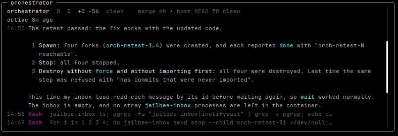

Illustrative workflow / not recorded execution
Import is not merge.
CommitWorker's changes
→DoneReport to coordinator
→ImportBring back the branch
→MergeIntegrate / resolve conflicts
Real orchestration test / not four bug fixes

